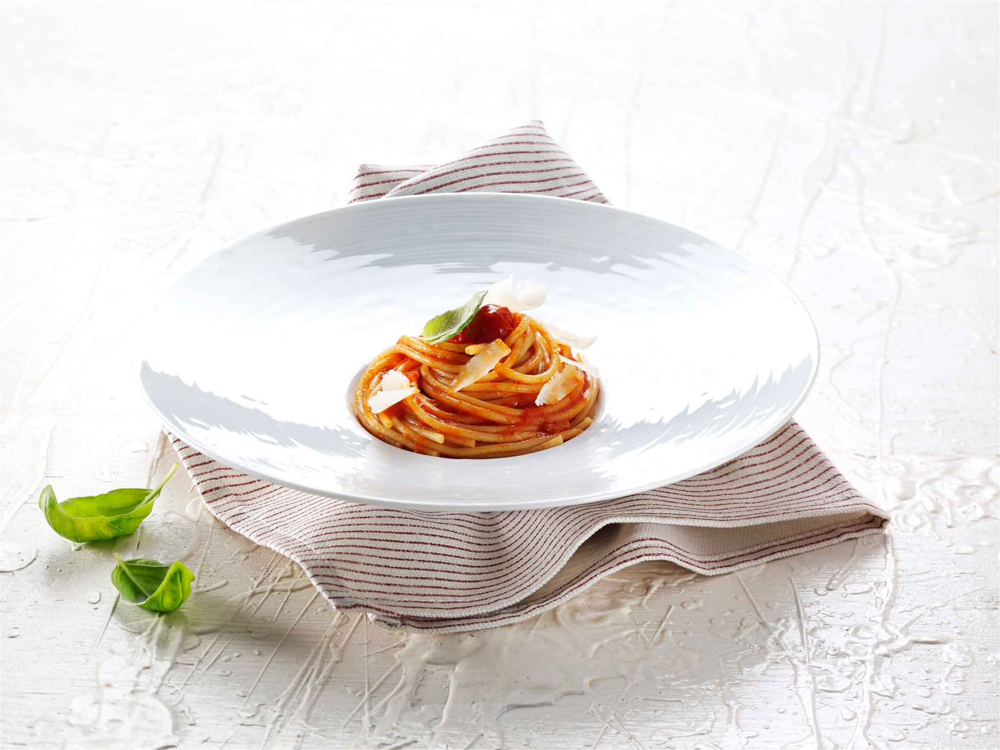

Spaghetti al Pomodoro

Description
This dish's simplicity creates a perfect dish when done the right way.
Ingredients
- Spaghetti
- Can of Whole Tomatoes
- 4 Garlic Cloves
- Olive oil
- Basil
Steps
- Heat olive oil in a pan
- Add smashed garlic cloves to oil
- Roughly chop or blend tomatoes
- Add tomatoes to pan along with hand torn basil
- Bring to a simmer and simmer for 20 minutes
- Bring lightly salted water to a boil in a pot
- Add spaghetti to boiling water and cook until just under al dente
- Add small amount of pasta water to tomato sauce
- Add Spaghetti to tomato sauce and finish cooking pasta in sauce
- Add olive oil to spaghetti and sauce until nicely creamy
- Top with hand torn basil leaves